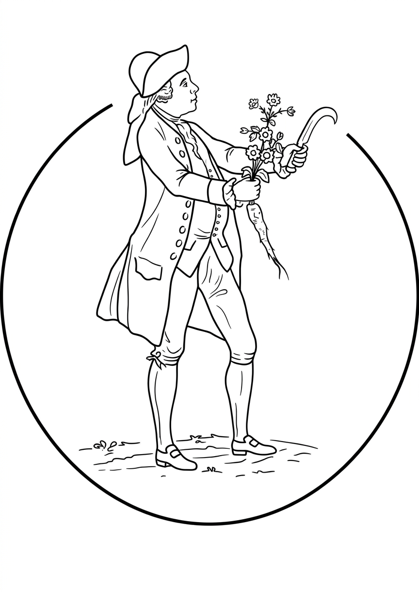

Solander898
Solander898 is an investment firm built on a simple idea: we manage other people's capital the way we manage our own.
We invest for the long term, grounded in fundamental research and independent thinking. Rather than optimizing for short-term outcomes, we aim to compound capital over time through disciplined decisions.
We work with a small group of investors who think the same way.
Solander898 es una firma de inversión construida sobre una premisa simple: el capital debe gestionarse como si fuera propio.
Invertimos con un horizonte de largo plazo, guiados por el análisis fundamental y el pensamiento independiente. El objetivo no es optimizar resultados a corto plazo, sino componer el capital a lo largo del tiempo mediante decisiones disciplinadas.
Trabajamos con un número limitado de inversores que comparten esta perspectiva.
We concentrate capital in our highest-conviction ideas, situations where we see a clear gap between market price and our estimate of intrinsic value. That gap is our margin of safety.
Diversification is not a goal in itself; it is the byproduct of a disciplined selection process. We manage risk through deep understanding, a margin of safety, and a long time horizon.
We are not chasing short-term returns. We seek lasting relationships with investors who share our view and who understand that discipline and patience are a competitive edge.
Concentramos capital en nuestras ideas de mayor convicción, situaciones donde identificamos una brecha clara entre el precio de mercado y nuestra estimación del valor intrínseco. Esa brecha es nuestro margen de seguridad.
La diversificación no es un objetivo en sí mismo. Es el resultado natural de un proceso de selección disciplinado. Gestionamos el riesgo a través del entendimiento profundo, el margen de seguridad y un horizonte de largo plazo.
No perseguimos retornos a corto plazo. Buscamos relaciones duraderas con inversores que comparten nuestra perspectiva y que entienden que la disciplina y la paciencia son una ventaja competitiva.
| UniverseUniverso | Public equities, with a bias toward understandable and durable businesses.Acciones públicas, con preferencia por negocios comprensibles y duraderos. |
| FocusFoco | The gap between price and intrinsic value.Relación entre precio y valor intrínseco. |
| Portfolio | Concentrated, with capital allocated where conviction is highest.Concentrado, con el capital asignado donde la convicción es mayor. |
| Investment HorizonHorizonte de Inversión | Multi-year, evaluated over full market cycles.Multi-año, evaluado en ciclos completos de mercado. |
| RiskRiesgo | Defined as the permanent loss of capital, not as volatility.Definido como la pérdida permanente de capital, no como volatilidad. |
| ActivityActividad | Low. Decisions are infrequent, but deliberate.Baja. Las decisiones son infrecuentes, pero deliberadas. |
Owner Mindset Mentalidad de Dueño
We think like owners, not traders. Every investment reflects a long-term commitment to a business, not a position in a portfolio. Pensamos como dueños, no como traders. Cada inversión refleja un compromiso a largo plazo con un negocio, no una posición en un portafolio.
Price & Quality Precio y Calidad
We invest at the intersection of business quality, durability, and price. Value is not defined by low multiples, but by the gap between price and intrinsic value. Invertimos en la intersección entre calidad del negocio, durabilidad y precio. El valor no se define por múltiplos bajos, sino por la brecha entre precio y valor intrínseco.
Research-Driven Basados en Investigación
Our work starts with understanding businesses: how they make money, what protects them from competition, and what they can earn over the long run. Nuestro trabajo comienza por entender los negocios: cómo generan dinero, qué los protege de la competencia y qué pueden ganar en el largo plazo.
Patience as an Edge La Paciencia como Ventaja
We believe time is a structural advantage. Patience is not passive; it is deliberate, and it is what allows value to compound. Creemos que el tiempo es una ventaja estructural. La paciencia no es pasiva; es deliberada, y es lo que permite que el valor se componga.
We focus on public equities across three categories, each selected to fit our expected return profile.
Nos enfocamos en acciones públicas en tres categorías, cada una seleccionada para ajustarse a nuestro perfil de retorno esperado.
We manage capital for people who see wealth not as a finish line, but as something meant to build and compound. Gestionamos capital para quienes conciben el patrimonio no como un fin, sino como algo que se construye y se compone en el tiempo.
We measure performance in years, not quarters. We invest with conviction, act with discipline, and let time do its work. Medimos resultados en años, no en trimestres. Invertimos con convicción, actuamos con disciplina y dejamos que el tiempo haga su trabajo.
info@solander898.com